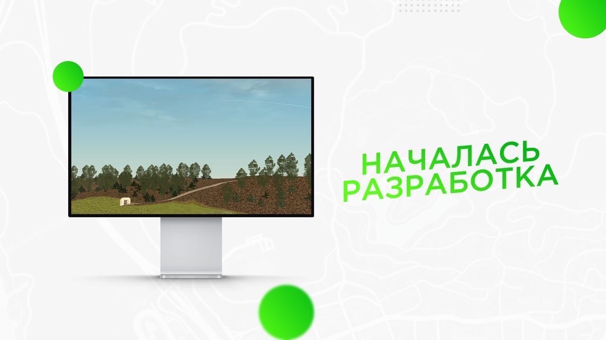
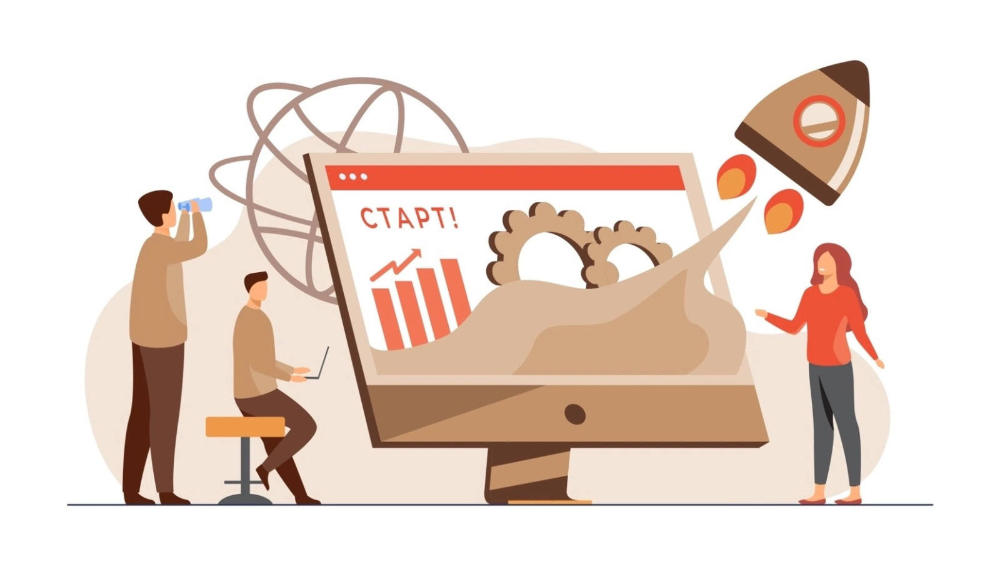

Начало разработки Frontend и Backend
Дата: 10.02.2025
Активная фаза разработки началась! Frontend команда работает над
версткой основных страниц сайта и созданием базовых компонентов
интерфейса. Backend команда приступила к проектированию базы данных
и разработке первых API эндпоинтов для регистрации пользователей и
управления заказами. Регулярно проводятся синхронизационные встречи
для обсуждения прогресса и решения возникающих вопросов.

Выбор технологического стека и дизайн
Дата: 27.01.2025
После тщательного анализа был выбран технологический стек для
разработки платформы. Для frontend части мы остановились на HTML,
CSS и JavaScript с возможным использованием современного фреймворка.
Backend будет реализован на Python с использованием Django/Flask.
Также началась работа над UX/UI дизайном: создаются первые прототипы
интерфейса и обсуждается пользовательский путь.
Запуск проекта и начальное планирование
Дата: 13.01.2025
Сегодня мы официально запустили работу над проектом "МеталлМастер
Платформа". Провели первое командное собрание, обсудили основные
цели, задачи и ожидаемые результаты. Составили предварительный план
работ и распределили первичные роли в команде. Основное внимание на
данном этапе уделяется сбору требований и анализу существующих
решений на рынке.
